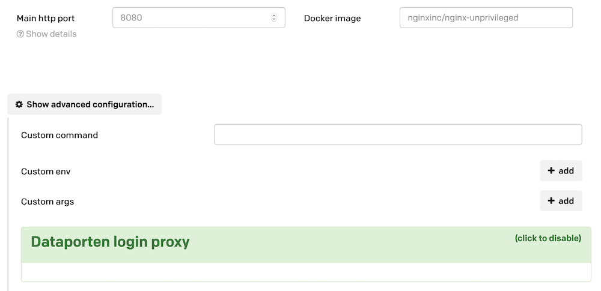

Configuration¶
The custom image package allows you to deploy an arbitrary Docker container.
Configuring the image¶
The common parameters such as host name and machine types are configured in the same way as other application types. Moreover, you will provide the name of the docker image to be deployed, see image below:

Custom commands, arguments and environment¶
If you need to override the command and/or arguments of the container, or provide custom environment variables, this can be done by using advanced configuration, also shown in the image.
Usage¶
The URL of the service deployed is accessible in the usual manner through the application’s overview page. Its usage depends on the container deployed.